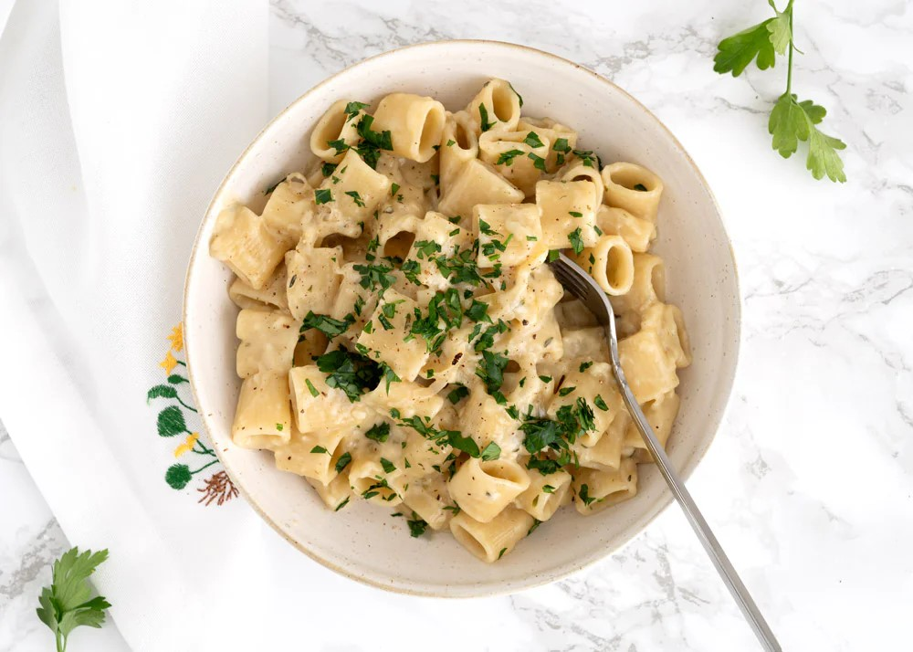

One pot french onion pasta

Lækker cremet one pot løg pasta ret, er ret nem at lave. Kan laves for få penge og smager himmelsk
ingredienserne
- 4 løg, halveret og i tynde skiver
- 3 fed hvidløg, finthakket
- 1 tsk timian, tørret
- 1 dl hvidvin
- 400 g pasta
- 8 dl grøntsagsboullion
- 1 dl piskefløde
- 1 spsk balsamico
- 175 g emmentaler, eller gruyere, groftrevet
- 15 g smør
- 1 spsk olivenolie
- salt
- sort peber, friskkværnet
Fremgangsmåde
- Kom løg i en gryde med olie og smør, sauter løgene ved middelvarme i 30 minutter. Rør jævnligt til løgene er bløde, søde og let karamelliseret
- Tilsæt hvidløg, timian, hvidvin, pasta, grøntsagsboullion og piskefløde. Rør det godt igennem i 5 minutter. Læg låg på og lad bring i kog.
- Kom i cirka 10 minutter eller til pastaen er perfekt mør. Smag til med salt, friskkværnet peber og balsamico. Rør groftrevet ost i og rør igennem til osten er smeltet og saucen jævnet.
- Server straks med et drys bredbladet persille og friskkværnet peber.